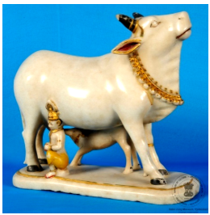

🔇 Is bhasha me is vastu ka audio abhi uplabdh nahi hai.
4. XLII - 40: गाय, बछड़ा और बालक कृष्ण

4. XLII - 40
यह नक्काशीदार प्रतिमा एक गाय की है, जिसमें दाहिनी ओर बालकृष्ण और बाईं ओर बछड़ा दिखाया गया है। बछड़ा गाय के एक स्तन से दूध पी रहा है और कृष्ण अपने दाहिने हाथ से गाय के थन को पकड़े हुए हैं। गाय, कृष्ण और बछड़े की यह प्रतिमा हिंदू धर्म में एक शक्तिशाली प्रतीक मानी जाती है, जो कृष्ण की दिव्य ग्वालपाल (चरवाहे) की भूमिका को दर्शाती है – अपने भक्तों का पालन-पोषण और उनकी रक्षा करना। कृष्ण को अक्सर “गोविंद” या “गोपाल” कहा जाता है, जिसका अर्थ है गायों का रक्षक, जो उनके इन पशुओं के प्रति प्रेम और देखभाल को उजागर करता है। गायों को धन और जीवन-दायिनी दूध का प्रतीक भी माना जाता है। इस प्रकार, गायों से कृष्ण का संबंध समृद्धि और प्रचुरता का प्रतीक है। यह संगमरमर की बनी गाय की प्रतिमा भारत से है और यह 20वीं शताब्दी की है।
4. XLII - 40: Cow, Calf and the Boy Krishna
4. XLII - 40
This carved figure is of a cow, with the boy Krishna shown on the right and the calf on the left. The calf is drinking milk from one of the cow's teats and Krishna holds the cow's udder with his right hand. This figure of the cow, Krishna and the calf is regarded as a powerful symbol in Hinduism, expressing Krishna's divine role as a cowherd — nurturing and protecting his devotees. Krishna is often called "Govinda" or "Gopala", meaning protector of cows, which highlights his love and care for these animals. Cows are also regarded as a symbol of wealth and of life-giving milk. In this way, Krishna's association with cows symbolises prosperity and abundance. This marble figure of the cow is from India and dates from the 20th century.
4.XLII - 40: ఆవు, దూడ మరియు బాలుడు కృష్ణుడు
4.XLII - 40
ఈ పాలరాతి విగ్రహం 20వ శతాబ్దానికి చెందిన భారతీయ కళాఖండం. ఇందులో ఒక ఆవు, దూడ మరియు బాలుడు కృష్ణుడు చెక్కబడి ఉన్నారు. ఆవుకు కుడి వైపున కృష్ణుడు మరియు ఎడమ వైపున దూడ కనిపిస్తారు. దూడ ఆవు ఒక పొదుగును తాకితే, కృష్ణుడు తన కుడి చేతితో ఆవు పాల పొదుగును పట్టుకుని ఉన్నాడు. ఆవు, కృష్ణుడు మరియు దూడ ఉన్న ఈ రూపం హిందూమతంలో ఒక శక్తివంతమైన చిహ్నం, ఇది కృష్ణుడి యొక్క దివ్య కాపరి పాత్రను, మరియు భక్తులను పోషించడం, రక్షించడాన్ని సూచిస్తుంది. కృష్ణుడిని తరచుగా "గోవింద" లేదా "గోపాల" (ఆవులను రక్షించేవాడు) అని పిలుస్తారు, ఇది ఆ జంతువులపై ఆయనకున్న ప్రేమ మరియు శ్రద్ధను నొక్కి చెబుతుంది. ఆవులు కూడా సంపద మరియు జీవనాధారమైన పాలను సూచించే చిహ్నాలుగా పరిగణించబడతాయి, అందువల్ల కృష్ణుడితో వాటి అనుబంధం శ్రేయస్సు మరియు సమృద్ధికి చిహ్నంగా ఉంది.
4. ایکس ایلII-40: گائے،بچھڑےاورلڑکےکرشن
4. ایکس ایلII-40
1.ایکسایل- 8:نندی کا مجسمہ
2. ایکس ایکسII - 534:سجاوٹی سامان
3. 13-59: مہاتماگاندھی
4. ایکس ایلII-40: گائے،بچھڑےاورلڑکےکرشن
5. ایم ایس -4556: وی اے ایس ای
6. ایل ایکس ایکسVII-349: پیپراسٹینڈ
7۔اے سی کیو-62-211-3: دسچھوٹےپرندے
8. VII-27: برڈکیاقسام
9۔ایل ایکس ایکسVII-99: شنکھ
ایکسایل 8: نندیکا مجسمہ
پتھر سے تراشا گیا نندی کا ایک مجسمہ، جس کے سامنے اسی چوکھٹ پر ایک چھوٹا شیولنگ رکھا ہوا ہے۔ نندی کے گردن میں ایک چھوٹی سی گھنٹی لٹک رہی ہے، جو فنکارانہ نزاکت اور خوبصورت کاریگری کی عمدہ مثال پیش کرتی ہے۔نندی کو نندیشور یا نندیدیو کے نام سے بھی جانا جاتا ہے۔ نندی ہندو دیوتا شیو کی سواریہے۔ تقریباً تمام شیو مندروں میں نندی کا پتھریلا مجسمہ موجود ہوتا ہے، جو عموماً مرکزی مندر کی طرف رخ کیے بیٹھا ہوتا ہے۔شاشتروں میں نندی کو زو انسانی شکل میں بیان کیا گیا ہے ، جس میں بیل کا سر اور چار بازو ہوتے ہیں۔اور ان ہاتھوں میں ہرن، کلہاڑی، گرز اور ابھے مودرا یعنی بے باکیکی علامت والا ہاتھدکھایا گیا ہے۔ بطور سواری، نندی کو دنیا بھر کے تمام شِو مندروں میں ایک بیٹھے ہوئے بیل کی صورت میں پیش کیا جاتا ہے۔ اس تصور کی ابتدا بھارت سے ہوئی اور اس کا تعلق سولہویں صدی سے جوڑا جاتا ہے۔
2. XXII-534: سجاوٹی سامان
املی کے بیجوں پر تراشے گئے جانوروں کا ایک خوبصورت فن پارہ۔ سات املی کے بیجوں کے آدھے حصوں پر نہایت نفاست سے دو ہاتھی ایک گھوڑا ایک شیر ایک ببر شیر ایک اونٹ اور ایک کتا کو دکھایا گیا ہے ۔یہ ایک آرائشی نمونہ ہے جس میں ہاتھی دانت سے تراشا گیا درخت ایک بیضوی لکڑی کے تختے پر نصب ہے۔ اس بیضوی لکڑی کے تختے کے گرد بیلدار نقش و نگار بنے ہوئے ہیں۔ لکڑی کے اس تختے کے دونوں کناروں پر دو سیاہ رنگ کے شیر نصب ہیں، جن کی دمیں پشت پر اٹھی ہوئی ہیں۔یہ فن پارہ ہاتھی دانت اور لکڑی سے تیار کیا گیا ہے اور فنکار کی اعلیٰ مہارت اور نفیس دستکاری کو نمایاں کرتا ہے۔ یہ سجاوٹی شاہکار ہندوستان سے تعلق رکھتا ہے اور بیسویں صدی کا ہے۔
3. 13-59: مہاتما گاندھی
مہاتما گاندھی کا یہ چلتا ہوا مجسمہ سیاہ رنگ کے ایک چبوترے پر کھڑا ہے اور پلاسٹر آف پیرس سے تیار کیا گیا ہے۔ دائیں ہاتھ میں ایک لاٹھی ہے جو سیاہ رنگ کی ہے، جبکہ بائیں ہاتھ سے وہ اپنی شال کے کنارے کو تھامے ہوئے ہیں۔ ان کے کمر بند پر ایک چھوٹی گھڑی لگی ہوئی ہے۔یہ گاندھی جی کا مجسمہ ہندوستان میں تیار کیا گیا ہے اور بیسویں صدیسے تعلق رکھتا ہے۔موہن داس کرم چند گاندھی، جنہیں مہاتما گاندھی کے نام سے جانا جاتا ہے، ہندوستان کی آزادی کی تحریک کے ایک مرکزی رہنما تھے۔ انہوں نے عدم تشدد کے اصول پر مبنی جدوجہد کی اور سماجی انصاف کے لیے دنیا بھر میں تحریکوں کو متاثر کیا۔گاندھی جی کو ہندوستان کا باپو یا بابائے قوم کہا جاتا ہے۔ انہوں نے انگریزوں کے استعماری اقتدار کے خلاف عدم تشدد پر مبنی تحریکوں کی قیادت کی۔مہاتما گاندھی کو آج بھی عدم تشدد، خود انحصاری اور سماجی مساوات کے اصولوں سے غیر متزلزل وابستگی کے لیے یاد کیا جاتا ہے۔
4. XLII-40: گائے، گائے کا بچہاور بالکرشنہ
سنگِ مرمر سے تراشا گیا گائے کا مجسمہ ، جس کے دائیں جانب بال کرشنہ اور بائیں جانب گائے کا بچہ موجود ہے۔ گائے کا بچہ گائے کے ایک تھن سے دودھ پی رہا ہے، جبکہ کرشنہ اپنے دائیں ہاتھ سے گائے کے دودھکے برتن کوپکڑے ہوئے ہیں۔گائے کرشنہ اور گائے کا بچہ کا یہ منظر ہندو مذہب میں ایک نہایت مقدس اور طاقتورعلامتسمجھا جاتا ہے، جو کرشنہ کے الوہی چرواہے کے کردار، ان کی پرورش و محافظت کی صفت اور بھکتوں پر شفقت و رحمت کی یاد دہانی کراتا ہے۔کرشنہ کو اکثر گووندیا گوپالکے نام سے پکارا جاتا ہے، جس کا مطلب ہے گایوں کا محافظ۔ یہ لقب ان کی ان صفات کی عکاسی کرتا ہے جن میں وہ ان جانوروں کے لیے محبت شفقت اور دیکھ بھال کا مظاہرہ کرتے ہیں۔ہندو روایت میں گائے دولتزرخیزی اور زندگی بخش دودھ کی علامت سمجھی جاتی ہے۔ اس طرح کرشنہ کا گایوں سے تعلقخوشحالی فیاضی اور برکت کی ایک ہمہ گیر علامت بن جاتا ہے۔یہ سنگِ مرمر کا مجسمہ ہندوستان سے تعلق رکھتا ہے اور بیسویں صدی سے ہے۔
5. ایم ایس-4556: گلدان
سبز مائل سیاہ رنگ کا گول مٹی کا گلدان، جس کی گردن کے حصے پر کھجور کے پتوں اور پودوں کے نقش ابھار دار انداز میں بنائے گئے ہیں۔ اس منظر میں ایک مگرمچھ کو دکھایا گیا ہے جو ایک افریقی لڑکی کی طرف بڑھ رہا ہے۔وہ افریقی لڑکی اپنے دائیں ہاتھ میں ایک چھوٹا برتن پکڑی ہوئی ہے۔ اس نے زرد اور نارنجی رنگ کا لباس پہن رکھی ہے، گردن میں سنہری ہار اور دائیں ہاتھ میں سنہری چوڑیاں پہنی ہوئی ہیں۔مگرمچھ کے سر کے قریب آٹھ پھل بنے ہوئے ہیں، اور اس کی دم گلدان کی گردن کو چھو رہی ہے۔ مگرمچھ کی تھوتھنی کا نچلا حصہ نارنجی رنگ میں رنگا گیا ہے۔یہ گلدان فرانس سے تعلق رکھتا ہے، مٹی سے تیار کیا گیا ہے، اس گلدان کا تعلق بیسویں صدی سے ہے
2. ایکس ایکسII - 534:سجاوٹی سامان
3. 13-59: مہاتماگاندھی
4. ایکس ایلII-40: گائے،بچھڑےاورلڑکےکرشن
5. ایم ایس -4556: وی اے ایس ای
6. ایل ایکس ایکسVII-349: پیپراسٹینڈ
7۔اے سی کیو-62-211-3: دسچھوٹےپرندے
8. VII-27: برڈکیاقسام
9۔ایل ایکس ایکسVII-99: شنکھ
ایکسایل 8: نندیکا مجسمہ
پتھر سے تراشا گیا نندی کا ایک مجسمہ، جس کے سامنے اسی چوکھٹ پر ایک چھوٹا شیولنگ رکھا ہوا ہے۔ نندی کے گردن میں ایک چھوٹی سی گھنٹی لٹک رہی ہے، جو فنکارانہ نزاکت اور خوبصورت کاریگری کی عمدہ مثال پیش کرتی ہے۔نندی کو نندیشور یا نندیدیو کے نام سے بھی جانا جاتا ہے۔ نندی ہندو دیوتا شیو کی سواریہے۔ تقریباً تمام شیو مندروں میں نندی کا پتھریلا مجسمہ موجود ہوتا ہے، جو عموماً مرکزی مندر کی طرف رخ کیے بیٹھا ہوتا ہے۔شاشتروں میں نندی کو زو انسانی شکل میں بیان کیا گیا ہے ، جس میں بیل کا سر اور چار بازو ہوتے ہیں۔اور ان ہاتھوں میں ہرن، کلہاڑی، گرز اور ابھے مودرا یعنی بے باکیکی علامت والا ہاتھدکھایا گیا ہے۔ بطور سواری، نندی کو دنیا بھر کے تمام شِو مندروں میں ایک بیٹھے ہوئے بیل کی صورت میں پیش کیا جاتا ہے۔ اس تصور کی ابتدا بھارت سے ہوئی اور اس کا تعلق سولہویں صدی سے جوڑا جاتا ہے۔
2. XXII-534: سجاوٹی سامان
املی کے بیجوں پر تراشے گئے جانوروں کا ایک خوبصورت فن پارہ۔ سات املی کے بیجوں کے آدھے حصوں پر نہایت نفاست سے دو ہاتھی ایک گھوڑا ایک شیر ایک ببر شیر ایک اونٹ اور ایک کتا کو دکھایا گیا ہے ۔یہ ایک آرائشی نمونہ ہے جس میں ہاتھی دانت سے تراشا گیا درخت ایک بیضوی لکڑی کے تختے پر نصب ہے۔ اس بیضوی لکڑی کے تختے کے گرد بیلدار نقش و نگار بنے ہوئے ہیں۔ لکڑی کے اس تختے کے دونوں کناروں پر دو سیاہ رنگ کے شیر نصب ہیں، جن کی دمیں پشت پر اٹھی ہوئی ہیں۔یہ فن پارہ ہاتھی دانت اور لکڑی سے تیار کیا گیا ہے اور فنکار کی اعلیٰ مہارت اور نفیس دستکاری کو نمایاں کرتا ہے۔ یہ سجاوٹی شاہکار ہندوستان سے تعلق رکھتا ہے اور بیسویں صدی کا ہے۔
3. 13-59: مہاتما گاندھی
مہاتما گاندھی کا یہ چلتا ہوا مجسمہ سیاہ رنگ کے ایک چبوترے پر کھڑا ہے اور پلاسٹر آف پیرس سے تیار کیا گیا ہے۔ دائیں ہاتھ میں ایک لاٹھی ہے جو سیاہ رنگ کی ہے، جبکہ بائیں ہاتھ سے وہ اپنی شال کے کنارے کو تھامے ہوئے ہیں۔ ان کے کمر بند پر ایک چھوٹی گھڑی لگی ہوئی ہے۔یہ گاندھی جی کا مجسمہ ہندوستان میں تیار کیا گیا ہے اور بیسویں صدیسے تعلق رکھتا ہے۔موہن داس کرم چند گاندھی، جنہیں مہاتما گاندھی کے نام سے جانا جاتا ہے، ہندوستان کی آزادی کی تحریک کے ایک مرکزی رہنما تھے۔ انہوں نے عدم تشدد کے اصول پر مبنی جدوجہد کی اور سماجی انصاف کے لیے دنیا بھر میں تحریکوں کو متاثر کیا۔گاندھی جی کو ہندوستان کا باپو یا بابائے قوم کہا جاتا ہے۔ انہوں نے انگریزوں کے استعماری اقتدار کے خلاف عدم تشدد پر مبنی تحریکوں کی قیادت کی۔مہاتما گاندھی کو آج بھی عدم تشدد، خود انحصاری اور سماجی مساوات کے اصولوں سے غیر متزلزل وابستگی کے لیے یاد کیا جاتا ہے۔
4. XLII-40: گائے، گائے کا بچہاور بالکرشنہ
سنگِ مرمر سے تراشا گیا گائے کا مجسمہ ، جس کے دائیں جانب بال کرشنہ اور بائیں جانب گائے کا بچہ موجود ہے۔ گائے کا بچہ گائے کے ایک تھن سے دودھ پی رہا ہے، جبکہ کرشنہ اپنے دائیں ہاتھ سے گائے کے دودھکے برتن کوپکڑے ہوئے ہیں۔گائے کرشنہ اور گائے کا بچہ کا یہ منظر ہندو مذہب میں ایک نہایت مقدس اور طاقتورعلامتسمجھا جاتا ہے، جو کرشنہ کے الوہی چرواہے کے کردار، ان کی پرورش و محافظت کی صفت اور بھکتوں پر شفقت و رحمت کی یاد دہانی کراتا ہے۔کرشنہ کو اکثر گووندیا گوپالکے نام سے پکارا جاتا ہے، جس کا مطلب ہے گایوں کا محافظ۔ یہ لقب ان کی ان صفات کی عکاسی کرتا ہے جن میں وہ ان جانوروں کے لیے محبت شفقت اور دیکھ بھال کا مظاہرہ کرتے ہیں۔ہندو روایت میں گائے دولتزرخیزی اور زندگی بخش دودھ کی علامت سمجھی جاتی ہے۔ اس طرح کرشنہ کا گایوں سے تعلقخوشحالی فیاضی اور برکت کی ایک ہمہ گیر علامت بن جاتا ہے۔یہ سنگِ مرمر کا مجسمہ ہندوستان سے تعلق رکھتا ہے اور بیسویں صدی سے ہے۔
5. ایم ایس-4556: گلدان
سبز مائل سیاہ رنگ کا گول مٹی کا گلدان، جس کی گردن کے حصے پر کھجور کے پتوں اور پودوں کے نقش ابھار دار انداز میں بنائے گئے ہیں۔ اس منظر میں ایک مگرمچھ کو دکھایا گیا ہے جو ایک افریقی لڑکی کی طرف بڑھ رہا ہے۔وہ افریقی لڑکی اپنے دائیں ہاتھ میں ایک چھوٹا برتن پکڑی ہوئی ہے۔ اس نے زرد اور نارنجی رنگ کا لباس پہن رکھی ہے، گردن میں سنہری ہار اور دائیں ہاتھ میں سنہری چوڑیاں پہنی ہوئی ہیں۔مگرمچھ کے سر کے قریب آٹھ پھل بنے ہوئے ہیں، اور اس کی دم گلدان کی گردن کو چھو رہی ہے۔ مگرمچھ کی تھوتھنی کا نچلا حصہ نارنجی رنگ میں رنگا گیا ہے۔یہ گلدان فرانس سے تعلق رکھتا ہے، مٹی سے تیار کیا گیا ہے، اس گلدان کا تعلق بیسویں صدی سے ہے
4. XLII - 40: গরু, বাছুর এবং বালক কৃষ্ণ
4. XLII - 40
এই খোদাই করা মূর্তিটি একটি গরুর, যাতে ডান দিকে বালকৃষ্ণ এবং বাঁ দিকে বাছুর দেখানো হয়েছে। বাছুরটি গরুর একটি স্তন থেকে দুধ পান করছে এবং কৃষ্ণ নিজের ডান হাত দিয়ে গরুর বাঁট ধরে আছেন। গরু, কৃষ্ণ ও বাছুরের এই মূর্তিটি হিন্দুধর্মে একটি শক্তিশালী প্রতীক বলে গণ্য হয়, যা কৃষ্ণের দিব্য গোপালকের ভূমিকা প্রকাশ করে – নিজের ভক্তদের লালনপালন ও রক্ষা করা। কৃষ্ণকে প্রায়ই “গোবিন্দ” বা “গোপাল” বলা হয়, যার অর্থ গরুদের রক্ষক, যা এই পশুদের প্রতি তাঁর ভালোবাসা ও যত্নকে তুলে ধরে। গরুকে ধন ও জীবনদায়িনী দুধের প্রতীকও মনে করা হয়। এইভাবে, গরুদের সঙ্গে কৃষ্ণের সম্পর্ক সমৃদ্ধি ও প্রাচুর্যের প্রতীক। মার্বেল পাথরে তৈরি এই গরুর মূর্তিটি ভারতের এবং এটি ২০শ শতাব্দীর।
4. XLII-40: ગાય, વાછરડું અને બાલ કૃષ્ણ
4. XLII-40
ગાયની કોતરેલી આકૃતિ, જેમાં જમણી બાજુએ બાળ-કૃષ્ણ અને ડાબી બાજુએ વાછરડું છે. વાછરડું સ્તનપાન કરી રહ્યું છે, અને કૃષ્ણ તેમના જમણા હાથમાં ગાયના દૂધની ટોપલી પકડેલા છે. કૃષ્ણ અને વાછરડાવાળી ગાયની આકૃતિ હિન્દુ ધર્મમાં એક શક્તિશાળી પ્રતીક છે, જે તેમના ભક્તોનું પાલન-પોષણ અને રક્ષણ કરનારા દેવ ગોપાલ તરીકેની તેમની ભૂમિકાનું પ્રતિનિધિત્વ કરે છે. કૃષ્ણને ઘણીવાર "ગોવિંદ અથવા ગોપાલ" કહેવામાં આવે છે, જેનો અર્થ ગાયોનો રક્ષક થાય છે, જે આ પ્રાણીઓ પ્રત્યેના તેમના પ્રેમ અને સંભાળ પર ભાર મૂકે છે. ગાયોને સંપત્તિ અને જીવન ટકાવી રાખનાર દૂધનું પ્રતીક પણ માનવામાં આવે છે, જેના કારણે કૃષ્ણનો તેમની સાથેનો સંબંધ સમૃદ્ધિ અને વિપુલતાનું પ્રતીક બને છે. ગાયની આ આરસપહાણની આકૃતિ ભારતની છે. તે 20મી સદીની છે.
4. XLII-40: ಕೌ, ಕ್ಯಾಲ್ಫ್ ಅಂಡ್ ದ ಬಾಯ್ ಕೃಷ್ಣ
4. XLII-40
ಅಮೃತಶಿಲೆಯಲ್ಲಿ ಕೆತ್ತಲಾದ ಹಸುವಿನ ಅದ್ಭುತ ಕಲಾಕೃತಿ ಇದು. ಇದರಬಲಭಾಗದಲ್ಲಿ ಬಾಲಕೃಷ್ಣನಿದ್ದರೆ, ಎಡಭಾಗದಲ್ಲಿ ಕರುವಿದೆ. ಕರುವು ಒಂದು ಕೆಚ್ಚಲಿನಲ್ಲಿ ಹಾಲು ಕುಡಿಯುತ್ತಿದ್ದರೆ, ಬಾಲಕೃಷ್ಣನು ತಮ್ಮ ಬಲಗೈಯಿಂದ ಹಸುವಿನ ಕೆಚ್ಚಲನ್ನು ಹಿಡಿದುಕೊಂಡಿದ್ದಾನೆ.ಹಸು ಹಾಗೂ ಕರುವಿನೊಂದಿಗೆ ಇರುವ ಕೃಷ್ಣನ ಈ ಮೂರ್ತಿಯು ಹಿಂದೂ ಧರ್ಮದಲ್ಲಿ ಒಂದು ಪ್ರಬಲವಾದ ಸಂಕೇತವಾಗಿದೆ. ಇದು ಭಗವಾನ್ ಕೃಷ್ಣನ ದೈವಿಕ ಗೋಪಾಲಕನ ಪಾತ್ರವನ್ನು, ಹಾಗೂ ತಮ್ಮ ಭಕ್ತರನ್ನು ಪೋಷಿಸುವ ಮತ್ತು ರಕ್ಷಿಸುವ ಅವರಕರುಣಾಮಯಿ ಗುಣವನ್ನು ಪ್ರತಿನಿಧಿಸುತ್ತದೆ. ಹಸುಗಳ ರಕ್ಷಕ ಎಂಬ ಅರ್ಥವನ್ನು ನೀಡುವ "ಗೋವಿಂದ" ಅಥವಾ "ಗೋಪಾಲ" ಎಂದು ಕೃಷ್ಣನನ್ನು ಹೆಚ್ಚಾಗಿ ಕರೆಯಲಾಗುತ್ತದೆ. ಇದು ಈ ಮೂಕಪ್ರಾಣಿಗಳ ಮೇಲಿನ ಅವನ ಅಪಾರ ಪ್ರೀತಿ ಮತ್ತು ಕಾಳಜಿಯನ್ನು ಎತ್ತಿತೋರಿಸುತ್ತದೆ. ಹಸುಗಳನ್ನುಸಂಪತ್ತು ಮತ್ತು ಜೀವದಾಯಕ ಹಾಲಿನ ಸಂಕೇತಗಳಾಗಿಯೂ ನೋಡಲಾಗುತ್ತದೆ. ಹೀಗಾಗಿ ಹಸುಗಳೊಂದಿಗಿನ ಕೃಷ್ಣನ ಒಡನಾಟವು ಸಮೃದ್ಧಿಮತ್ತು ಯಥೇಚ್ಛತೆಯ ಸಂಕೇತವಾಗಿದೆ.ಭಾರತದಲ್ಲಿಯೇ ರೂಪುಗೊಂಡಿರುವ ಹಸವಿನ ಈ ಭವ್ಯವಾದ ಅಮೃತಶಿಲೆಯ ಕಲಾಕೃತಿಯು 20ನೇ ಶತಮಾನದಷ್ಟು ಹಳೆಯದಾಗಿದೆ.
4. XLII-40: ଗାଈ, ବାଛୁରୀ ଏବଂ ଗୋପାଳ କୃଷ୍ଣ
4. XLII-40
ଡାହାଣ ପାର୍ଶ୍ୱରେ ବାଳକ କୃଷ୍ଣ ଏବଂ ବାମ ପାର୍ଶ୍ୱରେ ଗୋଟିଏ ବାଛୁରୀ ସହିତ ଖୋଦିତ ହୋଇଥିବାଗାଈରଏହି ପ୍ରତିମୂର୍ତ୍ତି। ବାଛୁରୀଟି ଗୋଟିଏ ଥନରେକ୍ଷୀର ପିଉଛି ଏବଂ କୃଷ୍ଣ ତାଙ୍କ ଡାହାଣ ହାତରେ ଗାଈର ଅନ୍ୟଥନଟିକୁ ଧରିଛନ୍ତି। କୃଷ୍ଣ ଏବଂ ବାଛୁରୀ ସହିତ ଗାଈରଏହି ପ୍ରତିମୂର୍ତ୍ତିଟି ହିନ୍ଦୁ ଧର୍ମରେ ଏକ ଶକ୍ତିଶାଳୀ ପ୍ରତୀକକୁ ଦର୍ଶାଇ ଥାଏ, ଏଠାରେ ଗୋପାଳକ ଭାବରେ ତାଙ୍କର ଦିବ୍ୟତ୍ୱକୁ ପ୍ରତିନିଧିତ୍ୱ କରେ ଓଭକ୍ତମାନଙ୍କପ୍ରତି ତାଙ୍କରପ୍ରେମ ଓ ସୁରକ୍ଷାମନୋଭାବକୁ ଦେଖିବାକୁ ମିଳିଥାଏ। କୃଷ୍ଣଙ୍କୁ ପ୍ରାୟତଃ "ଗୋବିନ୍ଦ କିମ୍ବା ଗୋପାଳ" ଭାବରେ ଦର୍ଶାଯାଇଛି। ଗୋପାଳ ଅର୍ଥ ଗାଈମାନଙ୍କର ପାଳନକାର୍,ଏଠାରେ ପଶୁମାନଙ୍କ ପ୍ରତି ତାଙ୍କର ପ୍ରେମ ଏବଂ ଯତ୍ନଶୀଳତାର ଏକ ସୁନ୍ଦର ପ୍ରତିଛବିଦେଖିବାକୁ ମିଳିଥାଏ। ଗାଈମାନଙ୍କୁ ଧନ ଏବଂ ଜୀବନର ଆଧାର ଭାବେ ଗ୍ରହଣ କରାଯାଏ- କ୍ଷୀରପରି ଅମୃତଧାରୀ ବୋଲି ମଧ୍ୟ ବିବେଚନା କରାଯାଇଥାଏ, ଏମାନଙ୍କ ସହ କୃଷ୍ଣଙ୍କ ସମ୍ପର୍କକୁ ସମୃଦ୍ଧି ଏବଂଉତ୍କର୍ଷତାର ପ୍ରତୀକ ବୋଲି କୁହାଯାଇଥାଏ। ଏହି ମାର୍ବଲ ପ୍ରତିମୂର୍ତ୍ତି ଭାରତରେ,ବିଂଶ ଶତାବ୍ଦୀରେ ନିର୍ମିତହୋଇଥିଲା।
Item 4
4. XLII - 40: പശുവുംപശുക്കിടാവുംബാലകൃഷ്ണനും
4. XLII - 40
വലതുവശത്ത്ബാലകൃഷ്ണനുംഇടതുവശത്ത്പശുക്കിടാവുംനിൽക്കുന്നരീതിയിൽ കൊത്തിയെടുത്തഒരുപശുവിന്റെശില്പം. പശുക്കിടാവ്അകിടിൽ നിന്ന്പാല് കുടിക്കുകയുംകൃഷ്ണൻ തന്റെവലതുകൈകൊണ്ട്പശുവിനെതടവുകയുംചെയ്യുന്നു. കൃഷ്ണനുംപശുവുംപശുക്കിടാവുംചേർന്ന ഈ രൂപംഹിന്ദുമതത്തിലെശക്തമായഒരുപ്രതീകമാണ്; ഇത്തന്റെഭക്തരെപോഷിപ്പിക്കുകയുംസംരക്ഷിക്കുകയുംചെയ്യുന്നഅദ്ദേഹത്തിന്റെദൈവികമായഇടയൻ എന്നഭാവത്തെപ്രതിനിധീകരിക്കുന്നു.
കൃഷ്ണനെപലപ്പോഴും "ഗോവിന്ദൻ" അല്ലെങ്കിൽ "ഗോപാലൻ" എന്ന്വിളിക്കാറുണ്ട്. പശുക്കളുടെസംരക്ഷകൻ എന്നാണ്ഇതിനർത്ഥം, ഇത് ആ മൃഗങ്ങളോടുള്ളഅദ്ദേഹത്തിന്റെസ്നേഹത്തെയുംകരുതലിനെയുംഎടുത്തുകാട്ടുന്നു. പശുക്കളെസമ്പത്തിന്റെയുംജീവൻ നിലനിർത്തുന്നപാലിന്റെയുംപ്രതീകമായാണ്കാണുന്നത്, അതിനാൽ കൃഷ്ണന്പശുക്കളുമായുള്ളബന്ധംഐശ്വര്യത്തിന്റെയുംസമൃദ്ധിയുടെയുംന്റെശില്പംഇരുപതാംനൂറ്റാണ്ടിൽ ഇന്ത്യയിൽ നിർമ്മിക്കപ്പെട്ടതാണ്.
കൃഷ്ണനെപലപ്പോഴും "ഗോവിന്ദൻ" അല്ലെങ്കിൽ "ഗോപാലൻ" എന്ന്വിളിക്കാറുണ്ട്. പശുക്കളുടെസംരക്ഷകൻ എന്നാണ്ഇതിനർത്ഥം, ഇത് ആ മൃഗങ്ങളോടുള്ളഅദ്ദേഹത്തിന്റെസ്നേഹത്തെയുംകരുതലിനെയുംഎടുത്തുകാട്ടുന്നു. പശുക്കളെസമ്പത്തിന്റെയുംജീവൻ നിലനിർത്തുന്നപാലിന്റെയുംപ്രതീകമായാണ്കാണുന്നത്, അതിനാൽ കൃഷ്ണന്പശുക്കളുമായുള്ളബന്ധംഐശ്വര്യത്തിന്റെയുംസമൃദ്ധിയുടെയുംന്റെശില്പംഇരുപതാംനൂറ്റാണ്ടിൽ ഇന്ത്യയിൽ നിർമ്മിക്കപ്പെട്ടതാണ്.